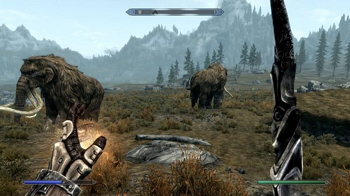

The Elder Scrolls V: Skyrim

The Elder Scrolls V: Skyrim is an action role-playing video game developed by Bethesda Game Studios that was released on Windows, PlayStation 3 and Xbox 360.
The game takes place in Skyrim, the northernmost province of Tamriel and the main story focuses on the player's character, the Dragonborn, who is on a quest to defeat Alduin the World-Eater, a dragon who is prophesied to destroy the world.
Over the course of the game, the player completes quests and develops their character by improving skills. The player can travel anywhere in the game world at any time, and can decide to ignore or postpone the main storyline indefinitely. The game allows the player to freely roam over the open-world land of Skyrim, with a variety of environments, like wilderness expanses, dungeons, caves, cities, towns, fortresses, and villages.
Characters have three primary attributes: health, magicka, which is depleted by casting spells, and stamina, which gives the character the ability to perform heavy "power attacks" or sprint. Characters gain experience indirectly, via leveling up skills. Each skill has its own experience bar and it increases when the character performs an action in-game related to the skill.
The player's effectiveness in combat is based on the use of weapons, armor and magic spells. Weapons, shields, and magic are assigned to each hand while allowing for dual-wielding, and can be swapped out through a quick-access menu of favorite items. Power attacks spend stamina to temporarily stun an enemy and deal increased damage. Spells have several functions, both in combat (e.g. damaging or confusing enemies, restoring the player's health and/or stamina) and out (e.g. showing the way to an objective or illuminating a dark room).